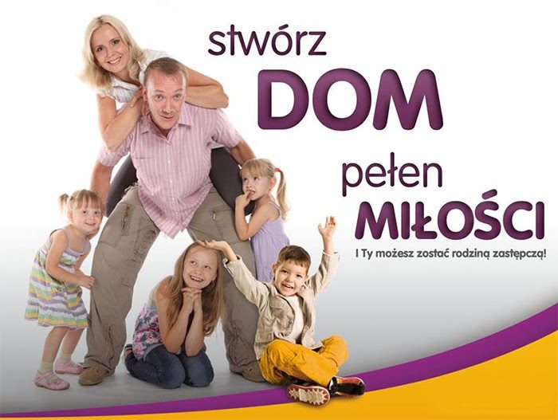

Rodzinna opieka zastępcza
Rodzina zastępcza daje dzieciom i ich rodzicom szansę, aby zaleczyć rany, odrodzić się i rozwinąć. Jej celem jest wzmocnienie rodzin naturalnych tak, aby dzieci mogły do nich wrócić, aby po zrozumieniu przyczyn kryzysu w swojej rodzinie umiały tworzyć trwałe związki na całe życie.

Kto może sprawować Rodzinną Opiekę Zastępczą?
- osoba lub rodzina spokrewniona z dzieckiem np. rodzeństwo, dziadkowie,
- osoba lub rodzina niespokrewniona z dzieckiem
Rodzinna opieka zastępcza jest:
wszechstronną opieką nad dzieckiem które nie ma właściwej opieki rodziców
Dzieci potrzebują opieki zastępczej, ponieważ zostały pozbawione opieki rodzicielskiej z powodu wystąpienia w ich rodzinach różnego rodzaju sytuacji kryzysowych, jak
- sieroctwo,
- ubóstwo,
- złe warunki mieszkaniowe,
- brak pracy,
- alkoholizm i inne uzależnienia,
- ciężkie choroby
- niezaradność w sprawach opiekuńczo- wychowawczych,
- skutki przedwczesnego macierzyństwa.
W rodzinach zastępczych umieszcza się dzieci, których rodzice zostali trwale lub czasowo pozbawieni praw rodzicielskich lub władza ta została ograniczona.
Jakie warunki trzeba spełniać, żeby zostać rodzicem zastępczym?
W myśl obowiązujących przepisów pełnienie funkcji rodziny zastępczej może być powierzone małżonkom lub osobie nie pozostającej w związku małżeńskim, jeśli spełniają następujące warunki:
- Dają rękojmię należytego wykonania zadań rodziny zastępczej, co zostało potwierdzone zaświadczeniem ośrodka prowadzącego przygotowanie do tej funkcji,
- Mają stałe miejsce zamieszkania na terytorium Rzeczypospolitej Polskiej
- Korzystają z pełni praw cywilnych i obywatelskich (nie byli karani),
- Nie są lub nie były pozbawione władzy rodzicielskiej, nie są ograniczone we władzy rodzicielskiej ani też władza rodzicielska nie im została zawieszona,
- Wywiązują się z obowiązku łożenia na utrzymanie osoby najbliższej lub innej osoby, gdy ciąży na nich taki obowiązek z mocy prawa lub orzeczenia sądu,
- Nie są chore na chorobę uniemożliwiającą właściwa opiekę nad dzieckiem, co zostało stwierdzone zaświadczeniem lekarskim,
- Mają odpowiednie warunki mieszkaniowe oraz stałe źródło utrzymania,
- Uzyskały pozytywną opinię ośrodka pomocy społecznej właściwego ze względu na miejsce zamieszkania.
Spełnienie wszystkich w/w przesłanek pozwala ubiegać się o powierzenie funkcji rodziny zastępczej.
Jakie dzieci najczęściej trafiają do rodzin zastępczych?
- dzieci z placówek opiekuńczo-wychowawczych,
- dzieci z rodzin niewydolnych wychowawczo, niezaradnych, nie potrafiących funkcjonować w społeczeństwie,
- dzieci z rodzin dotkniętych patologią społeczną (alkohol, narkotyki, przemoc w rodzinie i inne),
- dzieci, których rodzice są chorzy psychicznie lub weszli w konflikt z prawem,
- sieroty naturalne.
Formy rodzinnej opieki zastępczej
ADOPCJA
jest formą zastępczego środowiska rodzinnego, która powstaje na mocy orzeczenia sądu i niesie za sobą skutki podobne jak w przypadku rodziny naturalnej.
RODZINY ZASTĘPCZE SPOKREWNIONE
mogą ją utworzyć osoby spokrewnione lub spowinowacone z dzieckiem, jeżeli dają gwarancję poprawy sytuacji dziecka
RODZINY ZASTĘPCZE NIESPOKREWNIONE
rodzina "obca", która tymczasowo bądź na stałe opiekuje się i wychowuje dzieci; rodzina taka pełni funkcję rodziców zastępczych bez zrywania więzi z rodziną biologiczną dziecka
RODZINY ZASTĘPCZE ZAWODOWE
umieszcza się w niej w tym samym czasie nie mniej niż troje i nie więcej niż sześcioro dzieci; w przypadku konieczności umieszczenia w rodzinie licznego rodzeństwa liczba dzieci może być większa
RODZINY ZASTĘPCZE ZAWODOWE SPECJALISTYCZNE
umieszcza się w niej dzieci niedostosowane społecznie albo dzieci z różnymi dysfunkcjami, problemami zdrowotnymi wymagającymi szczególnej opieki i pielęgnacji; w rodzinie tej może wychowywać się w tym samym czasie nie więcej niż troje dzieci.
RODZINY ZASTĘPCZE O CHARAKTERZE POGOTOWIA RODZINNEGO
umieszcza się w niej nie więcej niż 3 dzieci na pobyt okresowy do czasu unormowania sytuacji życiowej dziecka, nie dłużej niż na 12 miesięcy; w szczególnie uzasadnionych przypadkach pobyt dziecka może być przedłużony, jednak nie więcej niż o kolejne 3 miesiące.
RODZINNY DOM DZIECKA (placówka rodzinna)
RDD tworzy jedną, wielodzietną rodzinę dla dzieci w różnym wieku umożliwiając opiekę nad licznym rodzeństwem w warunkach zbliżonych do domu rodzinnego. W placówce rodzinnej przebywać może od 4 do 8 dzieci jednakże w szczególnie uzasadnionych przypadkach liczba dzieci może ulec zmniejszeniu lub zwiększeniu. Dzieci pozostają w niej do czasu powrotu do rodziny, umieszczenia w rodzinie adopcyjnej lub usamodzielnienia.
RODZINNA OPIEKA ZASTĘPCZA
- Dotyczy zarówno sierot naturalnych oraz społecznych (rodzice są pozbawieni praw rodzicielskich trwale lub tymczasowo
- Jest zawiązywana na określony czas – do momentu powrotu do rodziny biologicznej lub usamodzielnienia się
- Nie powoduje więzi rodzinno - prawnej pomiędzy opiekunami a dzieckiem
- Opiekun otrzymuje częściowy zwrot kosztów utrzymania dziecka
- Akt urodzenia nie ulega zmianie (istnieje możliwość zmiany nazwiska dziecka na drodze administracyjnej)
- Opiekun ma obowiązek umożliwiania dziecku kontaktu z jego rodziną biologiczną
- Opiekunowie w niektórych typach opieki podpisują umowę zlecenia lub umowę o pracę, wtedy otrzymują wynagrodzenie za swoją pracę
ADOPCJA
- Dotyczy naturalnych sierot oraz gdy rodzice biologiczni zrzekli się lub zostali pozbawieni praw rodzicielskich
- Jest zawiązywana na całe życie
- Dziecko adoptowane ma takie same prawa jak dziecko naturalne
- Dziecko jest na całkowitym utrzymaniu rodziny adopcyjnej
- Sporządzany jest nowy akt urodzenia dziecka (nowe nazwisko, możliwość zmiany imienia)
- Dziecko jest całkowicie pozbawione kontaktu z rodziną biologiczną – jego jedyną rodziną staje się rodzina adopcyjna
- Rodzice nie są zatrudniani z tytułu opieki nad dzieckiem


Kontakt
Fundacja Rodzinnej Opieki Zastępczej JA I MÓJ DOM, ul. Chałasińskiego 11, 92-751 Łódź, tel. 42 671 35 76.